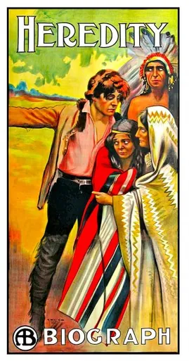

The genetics
The title states the theme. The boy is said to inherit his mother's 'Indian character', and at the climax 'the war-cry of his ancestors stirs the young Indian's blood'. The film favours nature, presenting racial character as an inherited essence that a white father's influence cannot override. It reflects the racial thinking of its time: the Italian Wikipedia reads it in the light of Griffith's views, for which crossing racial boundaries, and especially having mixed-race children, was a fault bound to end in tragedy. As usual in Griffith's films about Native Americans, Indian characters are played by white actors. No science appears. Modern genetics rejects the idea of a racial character or loyalty carried in the blood: behaviour and cultural identity are learned, and human genetic variation does not divide people into races with distinct temperaments.
The story
In this one-reel Biograph drama directed by D. W. Griffith, a renegade white trader living at the edge of a Native American village buys a young Indian woman as his bride, and they have a son. The boy grows up playing with the children of the tribe, and as he gets older the racial difference between father and son becomes ever more evident. Angered by the boy's reluctance to leave his mother's people, the father forces him with threats and violence to join him on a trading trip, and grows ashamed of his Indian wife and son in front of other white men. The trader has sold the tribe broken guns and bad whiskey, and when the Indians attack in revenge, the war cry of his ancestors stirs the son's blood. According to TV Guide's synopsis, the father is destroyed by his own crimes and mother and son are claimed by their people.